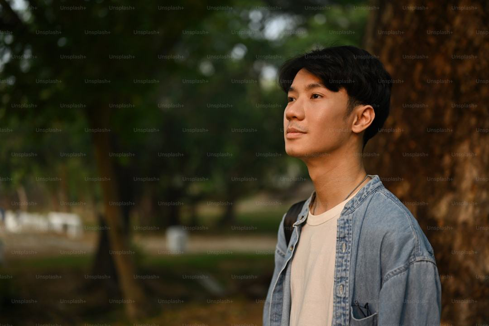

Remote
Web Designer
Build and maintain pages for AYM's global programs.
- Commitment
- Flexible · 4+ hrs/week
- Skills
- HTML/CSS, Figma, basic JavaScript
- Eligibility
- Beginner to intermediate

Lend your skills to empower local communities and shape sustainable youth-led futures.
Filter by location or time commitment — roles show the skills and eligibility you need before you apply.
Build and maintain pages for AYM's global programs.
Run campaigns that grow awareness and donations.
Tell the stories of the youth we serve.
Measure impact and improve our programs.
Research policy, funding, and best practice.
Coordinate volunteers and deliverables.
Shape VOTE Africa story videos and short clips.
Host conversations with young leaders and community voices.
Document community-led stories from the field.
Coordinate story production from pitch to publication.
Support subtitles and accurate community-language access.
Maintain the AYM video library and publishing calendar.
Give once or monthly, start a chapter in your city, or take on the one-year AYM Youth Fellowship for school leavers.
Donate → Start a Chapter →Tell us your skills, interests, and availability.
A quick screening helps keep our community safe.
We match you with the team that needs you most.
Get onboarded and make an impact from day one.
A proposed one-year, supervised volunteer learning pathway for emerging African leaders. Participation does not guarantee employment, payment, travel or placement.
Volunteers receive defined assignments, supervision and portfolio-building opportunities. Media support may include video editors, interview hosts, correspondents, producers, translators and channel managers. Roles begin on a voluntary basis and do not guarantee employment, payment, travel or placement.
Five short steps, saved as you go. Tell us your skills and availability and we'll match you with the team that needs you most.
Start Your ApplicationYou must be 16 or older, able to work in English, and comfortable passing a basic background check. Most roles need no prior professional experience.
Complete the five-step application form. Your progress is saved as you go, so you can pause and return at any time.
Roles range from entry-level to specialist. We match your skills with a need.
It's flexible—from a few hours a week to scheduled project work. Roles begin on a voluntary basis.
Yes. Many of our roles are fully remote, joining a global network of volunteers.
Application → background check → role acceptance → start your first project.
Can't find the answer you're looking for? Please chat to our friendly team.